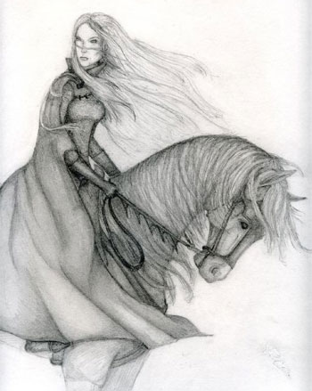
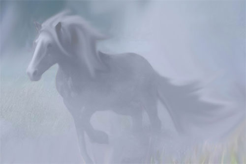
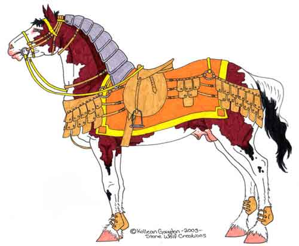
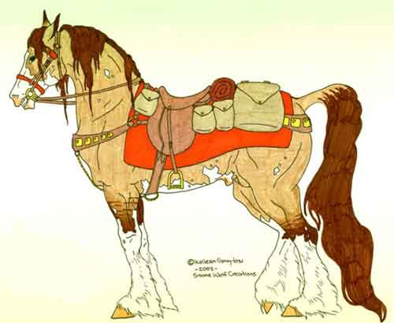
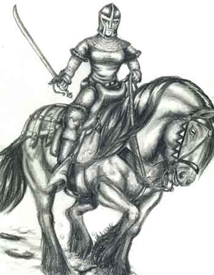
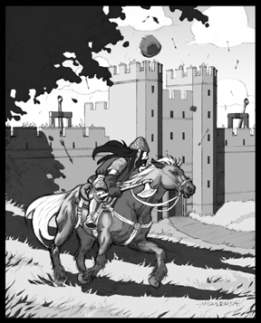
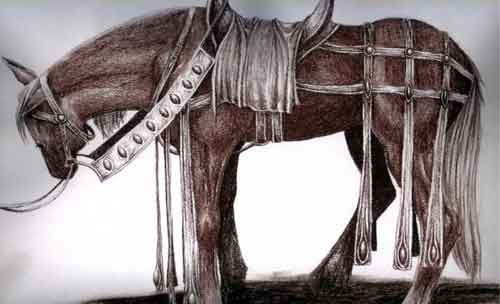

La qualità dei cavalli
Non solo esistono diverse razze di cavalli, ma all'interno
della stessa razza e categoria possono aversi cavalli di differenti qualità. La
qualità incide sia sul peso che queste cavalcature possono trasportare che sul
loro fattore movimento (arrotondamenti sempre per difetto). Un personaggio che
abbia la competenza "riding, land based" sui cavalli può rendersi
conto della qualità di un cavallo con una prova sull'abilità che avviene con
successo.
| Qualità del cavallo |
Modificatore al fattore movimento |
Modificatore al peso trasportato | Modificatore al costo |
| Brocco | 66% | 50% | none (50%) |
| Ronzino | 75% | 66% | none (75%) |
| Comune | none | none | none |
| Corsiero | 133% | 125% | *2 |
| Destriero | 150% | 133% | *4 |
Caratteristiche dei cavalli
Ogni cavallo ha una sua determinata caratteristica
caratteriale. Tirare 1d10 nella seguente tabella per verificare di che
caratteristica si tratta. Si noti che i cavalli comuni possono
avere (tirando 1d100) una caratteristica negativa (1-33), nessuna caratteristica
(34-66), oppure una caratteristica positiva (67-100).
| Brocco, Ronzino | Corsiero, Destriero |
| 1 Codardo | 1 Coraggioso |
| 2 Lento | 2 Veloce |
| 3 Testardo | 3 Aggressivo |
| 4 Viziato | 4 Unico cavaliere |
| 5 Non galoppa | 5 Attitudine alla corsa |
| 6 Non sopporta il carico | 6 Violento |
| 7 Tendenza a sgroppare | 7 Agile |
| 8 Mansueto | 8 Leale |
| 9 Debole | 9 Robusto |
| 10 Tirare nell'altra tabella (ignorando il 10) | 10 Tirare nell'altra tabella (ignorando il 10) |
Caratteristiche negative dei Brocchi e dei Ronzini
Codardo : Il
cavallo è particolarmente pauroso, ha 1 punto in meno di morale.
Lento : Il cavallo è particolarmente lento per
appartenere alla sua razza, ha 1 punto in meno di fattore movimento.
Testardo : Il cavallo è testardo e non risponde ai
comandi, ogni prova di "riding" subisce una penalità di -1.
Viziato : Il cavallo mangia erba e si struscia
mentre cammina il suo fattore movimento, limitatamente al percorso giornaliero
è valutato come se fosse di 2 punti inferiore.
Non galoppa : Per far correre il cavallo al galoppo
occorre superare una prova di "riding" con una penalità di -2.
Non sopporta il carico : Per far camminare il
cavallo con ingombro occorre superare una prova di "riding" con una
penalità di -2.
Tendenza a sgroppare : Quando il cavallo va in
panico e fugge ogni prova per restare in groppa subisce una penalità di -2.
Mansueto : Il cavallo è particolarmente mansueto e
non sa combattere bene, subisce una penalità di -1 alla
Tach0.
Debole : Il cavallo non è particolarmente robusto,
riceve una penalità di -1 punto ferita per ogni suo dado vita (minimo 1).
Caratteristiche positive dei Corsieri e dei Destrieri
Coraggioso :
Il cavallo è particolarmente coraggioso, ha 1 punto in più di morale.
Veloce : Il cavallo è particolarmente veloce, ha 1
punto in più di fattore movimento.
Aggressivo : Il cavallo è particolarmente
aggressivo, ha un bonus di +1 alla Thac0.
Unico cavaliere : Il cavallo si lascia cavalcare
solo da chi conosce molto bene, ogni volta che ci sale una persona nuova va
"in panico". Il cavallo si abituerà al nuovo cavaliere dopo circa un
mese che costui lo cavalca (ed in ogni caso dopo almeno 30 cavalcate).
Attitudine alla corsa : Il cavallo ottiene un bonus
di +2 alla prova di corsa e può mantenere questa andatura per 3 rounds
ulteriori.
Violento : Il cavallo è forte e violento, riceve
un bonus di +1 ai danni.
Agile : Il cavallo si muove con particolare
agilità ed è bravo ad evitare i colpi, riceve un bonus di -1 alla Classe
Armatura.
Leale : Il cavallo è particolarmente fedele e
rispetta i comandi, chi lo cavalca riceve un bonus di +1 a tutte le prove di
"riding".
Robusto : Il cavallo è particolarmente robusto,
riceve un bonus di +1 punto ferita per ogni suo dado vita.
Addestrare i
cavalli
Esistono due addestramenti generali a cui possono
sottoporsi i cavalli:
1) Addestramento a cavalcare (+25 g.p. al costo), il cavallo è stato addomesticato ed addestrato a portare un cavaliere oppure a svolgere compiti di traino. Il suo morale è Unsteady (1d3+4, 5-7). Questo cavallo combatterà solo se alle strette e quando non sarà cavalcato.
2) Addestramento a combattere (+100 g.p. al costo), il cavallo non solo è stato addestrato a portare un cavaliere ma è addestrato a combattere. Il loro morale è Elite (1-2-3 13, 4-5-6 14). In ogni round in cui chi li cavalca non attacca e non effettua altre manovre di combattimento questo cavallo attaccherà i nemici che si trovano in melee con lui.
Le razze di cavalli areliane
A meno che non sia specificato diversamente tutti i cavalli hanno le seguenti caratteristiche comuni :
| Classe Armatura |
7 |
| Intelligenza |
Animal (1) |
| Allineamento |
Neutral |
| Dieta |
Erbivori |
Il Selvic delle Terre Selvagge

Il Selvic è un cavallo che vive nelle Terre Selvagge, il suo manto grigiastro lo aiuta a mimetizzarsi nella nebbia. E' un cavallo veloce ma che non porta molto peso. E' utilizzato dalla cavalleria leggera e dai messaggeri.
| Costo |
90 g.p. |
| Dadi Vita |
2 |
| Movimento |
24 |
| Thac0 |
19 |
| Attacchi |
2 |
| Danni |
1-4/1-4 |
| Size |
L |
| Base Move |
0-170 lbs. |
| 2/3 Move |
171-255 lbs. |
| 1/3 Move |
256-340 lbs. |
| XP |
35 |
Il Pezzato delle Pianure

Il Pezzato delle Pianure è un cavallo comune in quasi tutta Arelia, fatta eccezione per la penisola di Irendal che è per lui troppo fredda. Vive nelle pianure e nelle colline spesso in stato selvaggio. E' un cavallo abbastanza veloce ma allo stesso tempo capace di sostenere un buon carico
| Costo |
50 g.p. |
| Dadi Vita |
2 |
| Movimento |
21 |
| Thac0 |
19 |
| Attacchi |
2 |
| Danni |
1-4/1-4 |
| Size |
L |
| Base Move |
0-190 lbs. |
| 2/3 Move |
191-290 lbs. |
| 1/3 Move |
291-390 lbs. |
| XP |
35 |
Il Nordoriano delle Colline

Il Nordoriano delle Colline è un cavallo originario del Nordor ma ormai comune in quasi tutta Arelia, fatta eccezione per la penisola di Irendal che è per lui troppo fredda. Vive sulle colline brulle e si trova spesso in stato selvaggio. E' un cavallo non molto veloce ma possente e capace di sostenere un buon carico. Viene utilizzato dalla cavalleria media e da molti guerrieri e cavalieri, o come cavallo da traino per piccoli carri e carrozze.
| Costo |
125 g.p. |
| Dadi Vita |
2+2 |
| Movimento |
18 |
| Thac0 |
18 |
| Attacchi |
2 |
| Danni |
1-6/1-6 |
| Size |
L |
| Base Move |
0-220 lbs. |
| 2/3 Move |
221-330 lbs. |
| 1/3 Move |
331-440 lbs. |
| XP |
65 |
Il Purosangue Pergariano

Il Purosangue Pergariano è un cavallo tipico della Penisola di Karsar. Oggi allevato in tutto il Sud-Arelia. Si tratta di un cavallo lento ma molto forte e massiccio, utilizzato in battaglia dalla cavalleria pesante, o come cavallo da traino pesante. La sua colorazione è quasi sempre scura (marrone o grigio scuro).
| Costo |
300 g.p. |
| Dadi Vita |
3+3 |
| Movimento |
15 |
| Thac0 |
17 |
| Attacchi |
2 |
| Danni |
1-8/1-8 |
| Size |
L |
| Base Move |
0-260 lbs. |
| 2/3 Move |
261-390 lbs. |
| 1/3 Move |
391-520 lbs. |
| XP |
120 |
Il Baio delle Montagne

Il Baio delle Montagne è un cavallo diffuso in tutta Arelia che vive ad alta quota sulle montagne. E' di piccole dimensioni, per questo motivo è impiegato come cavalcatura da nani, gnomi ed halfling, mentre le altre razze lo utilizzano come cavallo da soma o da tiro. Si tratta di una cavalcatura lenta ma molto resistente e in grado di portare un peso considerevole. Può essere utilizzata, inoltre, anche in territori rocciosi ed in montagna.
| Costo |
300 g.p. |
| Dadi Vita |
2+3 |
| Movimento |
12 |
| Thac0 |
18 |
| Attacchi |
2 |
| Danni |
1-4/1-4 |
| Size |
M |
| Base Move |
0-200 lbs. |
| 2/3 Move |
201-300 lbs. |
| 1/3 Move |
301-400 lbs. |
| XP |
50 |
Il Purosangue Silveriano

Il Purosangue Silveriano è un cavallo tipico delle pianure di Silveria. Ormai diffuso ed allevato allevato in tutto il Sud-Arelia. Si tratta di un cavallo veloce particolarmente indicato come cavallo da viaggio. La sua colorazione è quasi sempre marrone scuro.
| Costo |
75 g.p. |
| Dadi Vita |
2 |
| Movimento |
24 |
| Thac0 |
19 |
| Attacchi |
2 |
| Danni |
1-3/1-3 |
| Size |
L |
| Base Move |
0-180 lbs. |
| 2/3 Move |
181-270 lbs. |
| 1/3 Move |
271-360 lbs. |
| XP |
35 |